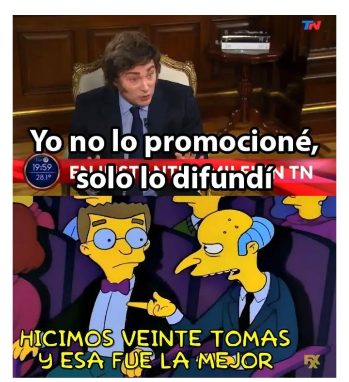
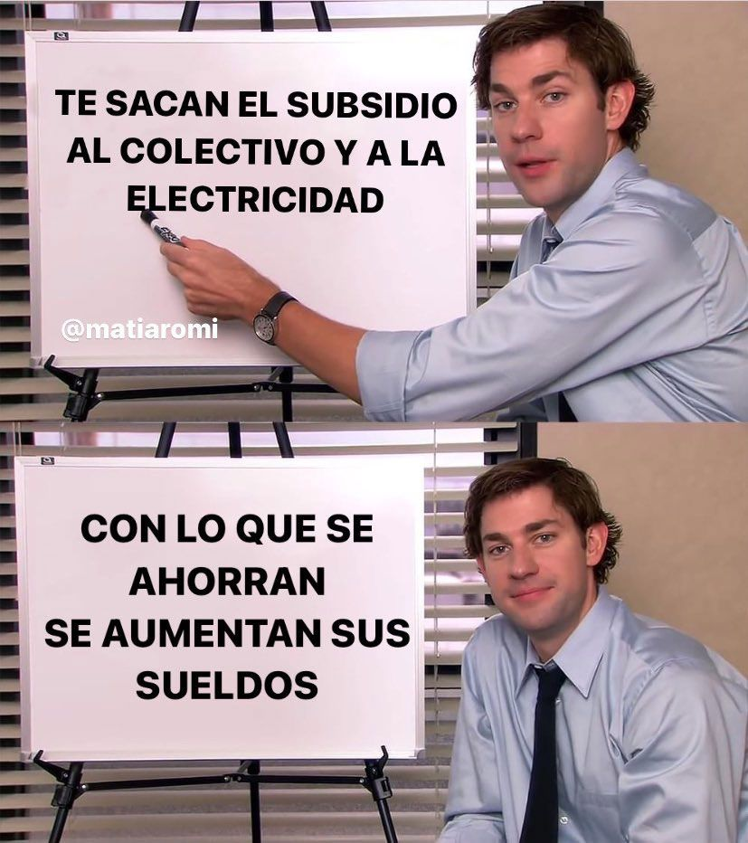
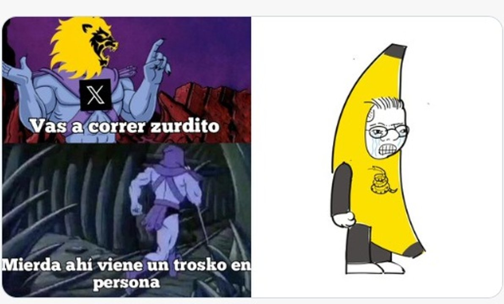
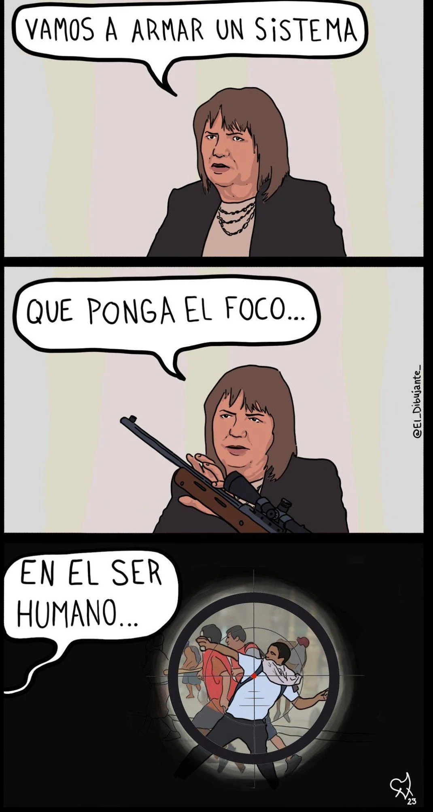
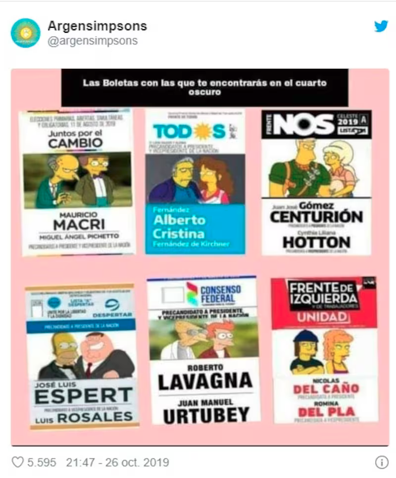
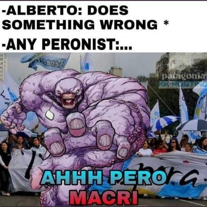

Barthes + Wiggins: memes
Lectura del cronograma: De la imagen analógica al discurso digital (2026): I.1 Barthes y III.9 Wiggins.
I. Los tres mensajes de Barthes
Roland Barthes propuso que toda imagen (y, en especial, la imagen publicitaria) puede analizarse como la superposición de tres mensajes distintos. Los tres se perciben simultáneamente y su separación analítica permite reconstruir cómo funciona el significado en una imagen.
1. El mensaje lingüístico
El mensaje lingüístico es el componente textual de la imagen: títulos, leyendas, etiquetas, globos de diálogo. Es el único mensaje que requiere conocer un código convencional (la lengua) para ser decodificado.
El mensaje lingüístico cumple dos funciones posibles respecto de los mensajes icónicos:
Anclaje: como las imágenes son extremadamente polisémicas (muchos sentidos e interpretaciones), el texto fija uno de sus múltiples sentidos posibles. Funciona como ancla que limita la polisemia y orienta la lectura hacia un sentido escogido de antemano.
Relevo: el texto y la imagen son fragmentos complementarios de un mensaje mayor. Las palabras aportan información que completa el desarrollo del mensaje. Es frecuente en historietas, memes y cine.
En los memes, el relevo suele ser la función dominante: sin el texto, la imagen pierde su sentido polémico; sin la imagen, el texto pierde su efecto humorístico, irónico o crítico.
2. El mensaje icónico no codificado (denotado, literal)
El mensaje icónico denotado (o no codificado) es lo que se ve en la imagen sin mediación interpretativa: las formas, los colores, los objetos que se pueden identificar como componentes de la imagen. En el caso de la fotografía, Barthes habla de “mensaje sin código” por su naturaleza analógica y por el modo en que transmite la información literal.
La fotografía es el caso paradigmático: a diferencia del dibujo, “registra” la realidad sin transformarla mediante un código. Por eso produce la impresión de que lo fotografiado “realmente estuvo ahí”. Esta es la paradoja de la fotografía: un mensaje sin código que transmite la sensación de realidad más poderosa que cualquier mensaje codificado.
Denotación y naturalización: el mensaje denotado actúa como “baño lustral de inocencia” sobre los mensajes simbólicos (Barthes). Al percibir que los objetos “simplemente están ahí”, el lector tiende a naturalizar las connotaciones que los acompañan; entonces, lo ideológico es objeto de un proceso de naturalización.
3. El mensaje icónico codificado (connotado, simbólico, cultural)
El mensaje icónico connotado (o codificado) es la capa de sentido que se lee en la imagen a partir de saberes culturales compartidos: la opulencia del champagne o de un frasco de perfume, el carácter artístico de una naturaleza muerta, la nostalgia evocada de ciertas combinaciones de colores, etc. Barthes llama a estos significados “semas de connotación”.
Los semas de connotación dependen de léxicos culturales y de los repertorios simbólicos disponibles para la lectura. Por eso una misma imagen puede producir lecturas diferentes.
La denotación es el soporte de la connotación: los elementos denotados (formas, colores, relaciones u objetos ‘reales’ en la imagen) funcionan como significantes de la connotación. El tomate denota “tomate” y connota “italianidad”. El muro denota “construcción de bloques de cemento” y connota “fracaso del socialismo”. La connotación usa el material de la denotación para construir significado cultural.
Saberes, intertextualidades e ideologías
Para Barthes, la comprensión del mensaje connotado requiere saberes culturales específicos que denomina “léxicos”. “¿Y qué es un léxico? Es una porción del plano simbólico (del lenguaje) que se corresponde con un corpus de prácticas y técnicas”. Entonces, distintos lectores pueden activar distintos léxicos ante la misma imagen, lo que produce lecturas diferentes de un mismo objeto.
El conjunto de los connotadores de una imagen forma su retórica. Y esa retórica expresa, en última instancia, una ideología: los valores, las creencias y las representaciones de una sociedad y un momento históricos dados. La ideología, dice Barthes, es el campo común de los significados de connotación, independientemente de la sustancia que los exprese (imagen, palabra, gesto).
Síntesis: los tres mensajes [Barthes, 1992]
|
|---|
II. El meme de internet según Wiggins
Del gen al entimema
Richard Dawkins acuñó el término “meme” para describir unidades de transmisión cultural que se replican por imitación, análogas a los genes. Bradley Wiggins caracteriza el meme de internet por la alteración deliberada y la resignificación realizadas por sus usuarios.
El propio Dawkins reconoció que el meme de internet constituye una especie de “secuestro” del término original y destacó el carácter diseñado de sus mutaciones.
Wiggins propone el concepto de entimema como origen etimológico más adecuado:
Entimema [Wiggins, 2024] El entimema es un argumento que deja sin enunciar su conclusión: el oyente / lector la completa o suministra. Los memes de internet funcionan como argumentos visuales porque proponen o contrarrestan un discurso dejando que la audiencia complete el razonamiento. Su eficacia depende del grado de acuerdo entre emisor y receptor: ambos deben compartir saberes, valores y contextos culturales para que el meme funcione. Esta condición se vincula con la noción de léxico cultural de Barthes: la interpretación del meme depende de los saberes culturales activados por sus elementos. |
|---|
Definición de meme de internet
Para Wiggins, el meme de internet es un mensaje remixado, iterado, que puede ser difundido rápidamente por miembros de la cultura digital participativa con fines de sátira, parodia, crítica u otra actividad discursiva.
Su función central consiste en plantear un argumento visualmente para iniciar, ampliar, contrarrestar o influir en un discurso. El humor puede funcionar como punto de entrada y articularse con la dimensión ideológica del meme.
Intertextualidad e ideología en los memes
Siguiendo a Kristeva, Wiggins propone que el meme se constituye mediante remisiones a otros textos, imágenes, personajes o situaciones. La intertextualidad es constitutiva del género.
La intertextualidad es intencional, inevitable y omnipresente. Todos los textos son intertextos: referencias a otros contenidos, citas, alusiones o parodias. Esto es especialmente relevante para los memes, que se construyen sobre el reconocimiento de materiales preexistentes (personajes de series, fotogramas de películas, formatos virales, etc.) y agregan, sobre ese fondo, un argumento nuevo.
Cada elección semiótica (qué imagen usar, qué texto agregar, qué personaje invocar) está ideológicamente motivada y apunta a que el significado sea lo más comprensible posible para la audiencia a la que se dirige el meme.
Articulación Barthes / Wiggins
|
|---|
III. Metodología de análisis de memes
A continuación se propone una secuencia analítica que integra los tres mensajes de Barthes con la perspectiva argumentativa e intertextual de Wiggins.
| 1 | Descripción del contexto de circulación ¿En qué plataforma circuló? ¿Cuándo? ¿En qué contexto político, social o cultural? ¿Quién lo creó (si se sabe) y a quién estaba dirigido? ¿Qué discurso previo referencia, impugna o amplifica? |
|---|
| 2 | Mensaje lingüístico ¿Qué textos aparecen en el meme? ¿Cuál es su función: anclaje (fija el sentido de la imagen) o relevo (aporta información complementaria al mensaje visual)? ¿El texto y la imagen dicen lo mismo o se complementan? |
|---|
| 3 | Mensaje icónico denotado (literal) ¿Qué se ve en la imagen sin interpretarla? Describir: personajes, lugares, objetos, acciones reconocibles, etc. ¿Cuántas imágenes se combinan? ¿De qué origen son (fotografía, captura de pantalla, animación, dibujo)? ¿Qué genera el montaje o la yuxtaposición de esas imágenes? |
|---|
| 4 | Mensaje icónico connotado (simbólico) ¿Qué saberes culturales activan los elementos de la imagen? (saber político, popular, televisivo, de internet, etc.) ¿Cuáles son las connotaciones principales? ¿Qué valores, juicios o representaciones se activan? ¿Quién puede leer este meme “completamente”? ¿Qué léxicos son necesarios? |
|---|
| 5 | Intertextualidad y textos fuente ¿A qué texto(s) remite el meme? (serie, película, meme preexistente, hechos, etc.) ¿Qué connotaciones traen esos textos fuente? ¿Cómo se resemantizan en el nuevo contexto? ¿La intertextualidad es obvia o requiere saberes especializados? |
|---|
| 6 | Argumento y entimema ¿Cuál es la tesis que el meme defiende o impugna? ¿Qué parte del argumento deja implícita (para que el receptor la complete)? ¿Qué saberes previos necesita el receptor para completar ese argumento? ¿Cómo funciona el humor, la ironía o la parodia como vehículos del argumento? |
|---|
| 7 | Dimensión ideológica ¿Qué representaciones del mundo activa el meme? ¿Qué grupos, instituciones o prácticas legitima o deslegitima? ¿Cómo se relaciona con disputas ideológicas más amplias (políticas, económicas, culturales)? ¿A quién interpela y a quién excluye? |
|---|
IV. Ejemplo de análisis

Este meme circuló en 2025 en el contexto del escándalo por el criptoactivo $LIBRA. Milei había reposteado contenido relativo al token y luego declaró en una entrevista en TN: “Yo no lo promocioné, solo lo difundí”. La imagen combina un frame del noticiero con una viñeta de Los Simpson.
Paso 1: Contexto de circulación
El meme circula en X (ex Twitter) y WhatsApp en febrero-marzo de 2025, días después de que Milei difundiera en sus redes el criptoactivo $LIBRA, que resultó ser una estafa. Ante la presión pública, en TN formuló la distinción entre “promocionar” y “difundir” el token. La declaración se viralizó de inmediato. El meme apunta a audiencias que siguen la actualidad política argentina y reconocen la serie Los Simpson.
Paso 2: Mensaje lingüístico
Hay dos textos en el meme:
Cita atribuida a Milei (sobre fotograma de TN): “Yo no lo promocioné, solo lo difundí”.
Epígrafe de Los Simpson: “Hicimos veinte tomas y esa fue la mejor”.
La función del mensaje lingüístico es de relevo (Barthes): los dos textos aportan la articulación argumentativa que conecta las imágenes. La frase de Milei resulta tan torpe que parece, como la escena de la filmación, la mejor versión posible de algo mal ensayado. Los textos establecen la relación entre las dos imágenes.
Paso 3: Mensaje icónico denotado
Imagen superior: un hombre de traje habla frente a una cámara, un logo con las letras “TN” visible, una serie de números en el borde de la pantalla. Imagen inferior: dos personajes animados amarillos en una sala oscura; uno señala al otro con cierta gestualidad. Son dos imágenes de naturaleza distinta (fotografía periodística / animación televisiva) montadas verticalmente.
Paso 4: Mensaje icónico connotado
Para leer este meme completamente se necesitan al menos tres saberes culturales:
Reconocimiento del personaje: que el hombre de la foto es Javier Milei. Ese saber vuelve políticamente relevantes las palabras citadas y habilita su ridiculización.
Reconocimiento del universo de Los Simpson: la viñeta con Burns y Smithers connota poder, cinismo y traición a la confianza pública. Burns es el villano clásico del capitalismo rapaz; Smithers, su cómplice usual. Ese saber permite interpretar la gestualidad del señor Burns y la equiparación implícita de Milei con ese arquetipo.
Saberes sobre redes sociales: la distinción “promocionar / difundir” es un eufemismo transparente para quien entiende que repostear es, funcionalmente, promover. El chiste solo funciona si el lector tiene ese saber sobre cómo opera la viralidad digital.
La eficacia retórica y política del meme depende de los saberes culturales y del posicionamiento político-ideológico del receptor. La comprensión del mecanismo semiótico puede coexistir con una valoración política diferente (ver Pasos 6 y 7).
La connotación central es la de hipocresía del poder: alguien que actúa con premeditación y luego pretende inocencia. El meme convierte esa connotación en cómica mediante el paralelismo con la ficción televisiva, que ya tenía ese significado incorporado en la cultura popular.
Paso 5: Intertextualidad y textos fuente
El meme trabaja con dos textos fuente diferenciados:
La entrevista de Milei en TN: material periodístico real, de alta circulación, que ya estaba siendo comentado y criticado en redes. El meme toma la cita y la resignifica mediante su relación con otro texto.
La serie Los Simpson: texto de la cultura popular globalizada, con altísima penetración en Argentina. La escena de Burns y Smithers trae consigo toda la semántica de la serie: el rico malvado, el servidor leal, el capitalismo sin límites, el cinismo como marca de clase, entre otros sentidos culturales. En palabras de Wiggins, podría decirse que el meme “secuestra” ese texto para producir un argumento político.
En este contexto, la intertextualidad hace posible el argumento: la relación con Los Simpson transforma la cita periodística en una pieza de crítica.
Paso 6: Argumento y entimema
El argumento del meme, si se explicitara completamente, sería: “Milei difundió conscientemente una estafa y luego fingió inocencia con una distinción insostenible entre promover y difundir”.
El meme deja implícita esa conclusión y organiza la relación entre las imágenes para que el receptor la complete. Por eso corresponde al funcionamiento del “entimema”. La premisa implícita (“difundir algo en redes equivale a promoverlo”) es aportada por el lector, y la conclusión (“Milei miente o es hipócrita”) se reconstruye a partir del conjunto. La participación inferencial del receptor forma parte de la eficacia argumentativa.
Paso 7: Dimensión ideológica
El meme deslegitima al presidente y activa representaciones culturales previas del poder como manipulación y cinismo. Al elegir la escena de Burns y Smithers, el meme inscribe a Milei en la genealogía del villano capitalista de la cultura popular, es decir, un arquetipo de complicidad entre el poderoso y su servidor en contra de los intereses del público general.
Así, interpela principalmente a quienes desconfían del gobierno o del mercado de criptoactivos. La eficacia argumentativa depende de que el receptor comparta las premisas activadas por el meme.
V. Consigna: analizar los siguientes memes
Para cada meme, aplicar la metodología de análisis propuesta (pasos 1 a 7). Criterios para el análisis:
Describir antes de interpretar: en el paso 2 (mensaje denotado), registrar personajes, objetos, acciones, espacios y relaciones visibles.
Explicitar los saberes: en el paso 3, señalar qué conocimientos previos son necesarios y cuáles quedan fuera del alcance de ciertos lectores.
Identificar el texto fuente: en el paso 4, precisar de dónde viene el material intertextual y qué connotaciones trae.
Reconstruir el argumento completo: en el paso 5, escribir la tesis que el meme defiende, incluyendo la parte implícita que el lector debe completar.
Humor y sentido: analizar cómo el efecto humorístico se articula con el argumento y con la dimensión ideológica.





Nota: el objetivo del análisis es describir cómo el meme produce significado: qué mecanismos usa, a qué saberes apela, qué argumento construye y para quién. Las diferencias de recepción según el posicionamiento del lector forman parte del problema analítico.